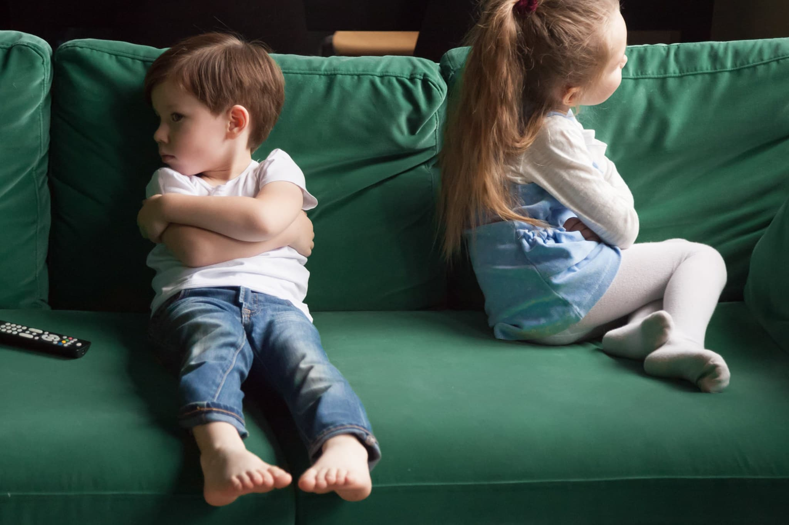

כל כך חיכינו להיות ביחד בשבת החורפית, גשם וקר בחוץ ואנחנו בבית, בילוי משפחתי. הבוקר התחיל כל כך מבטיח ואז ברגע אחד, לפני שהבנו מה קורה, התחילו הצרחות...
בכל בית ישנן מריבות. מריבות הן תופעה נורמלית וטבעית, אז אפשר לקחת אוויר ולהירגע. עוצמת המריבות והמינון משתנות בהתאם לאישיותו של הילד ולמזגו.
בית ספר לחיים
מריבות בין אחים הן במידה מסוימת בית ספר לחיים. הילדים בוחנים את כוחותיהם הפיזיים, את היכולת לעמוד על שלהם ואת יכולתם להציב גבולות. הריב חיוני כדי ללמוד להסתדר בעולם.
- באמצעות ריב ניתן ללמוד להגיע לפשרה.
- באמצעות ריב ניתן ללמוד שגם לאחר יש רצונות.
- באמצעות ריב ניתן ללמוד שלאחר יש מחשבות שונות.
- מאחורי כל מריבה קיימת מטרה (לא תמיד מודעת): "יש לי כוח" — מטרת הילד לבדוק את כוחו.
במידה ובתוצאת המריבה אחיו בוכה או נעלב, הילד נהנה מתחושת הכוח והדבר יעודד אותו להמשיך ולייצר מריבות. המריבה משתלמת — אח אחד או יותר מרוויחים משהו מהסיטואציה.
תחרותיות — ילדים המונעים על ידי תחרותיות ורוצים להיות ראשונים בכל יממשו זאת בכל דרך, גם במריבה. כאשר ילדים רבים הם מושכים תשומת לב מהסביבה — תשומת לב היא סיבה חשובה לילדים רבים. חלקם מצליחים בצורה זו להבליט את כוחם וחלקם מצליחים למשוך את המבוגר להגן עליהם.
הילדים נלחמים על תשומת לב ההורים ועל ההכרה שלהם, וכאן מגיע החלק שלנו ההורים.
התערבות — כן או לא?
הניסיון מלמד שכאשר הילדים צריכים להסתדר ביניהם הם רבים פחות. כאשר הם יודעים שהמריבה תסתיים בהכרעה של מבוגר – הם אחראים פחות ורבים יותר.
ישנן אסכולות שונות לגבי התערבות במריבות ילדים, אך רוב המבוגרים אינם מצליחים שלא להתערב כלל. מודעות לעובדה שהמריבות הן צורך התפתחותי אולי תאפשר לכם לספוג חלק מהמריבות.
תגובתכם למריבות היא המפתח העיקרי ליחסו של הילד למריבות ולמידת מעורבותו במריבות בעתיד. אם בחרתם להתערב יש צורך לעשות זאת בצורה שאינה שיפוטית. צריך לכעוס על הילדים במידה שווה ולהימנע מנקיטת עמדה לטובת אחד מהם.
ההתערבות נעשית על מנת למנוע תוקפנות גופנית, כדי להציב גבולות (לכל המשתתפים במריבה) ולעודד את הילדים למצוא פתרונות בכוחות עצמם.
בהצלחה, אורית.
מעוניינים לדעת עוד? אורית זמינה לשאלות ופגישות ייעוץ.
צרו קשר